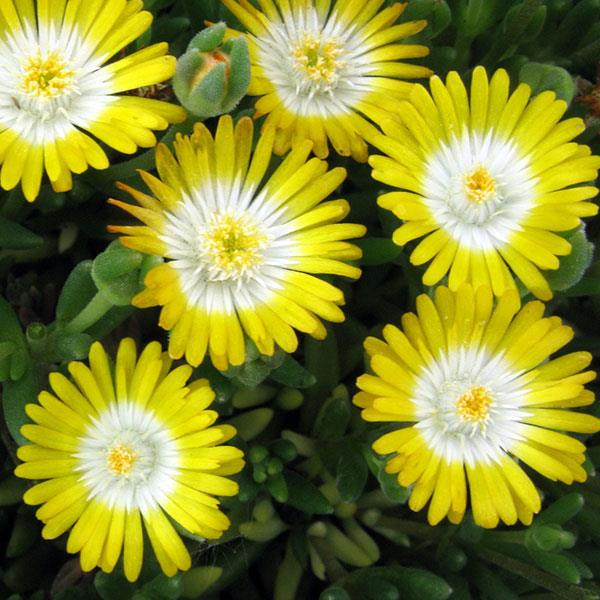
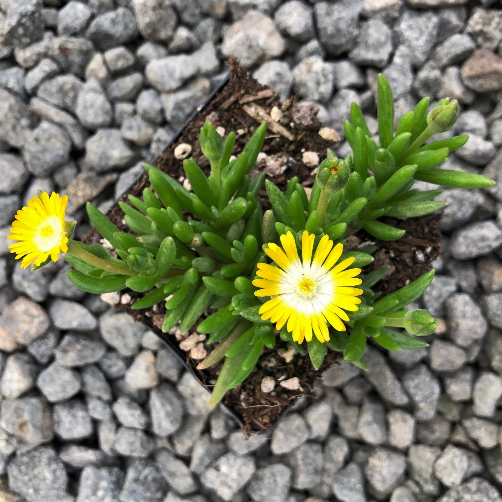

Peridot Ice Plant



Details
A gorgeous ground-covering solution for your driest, sunniest spots, Jewel of Desert Peridot Ice Plant (Delosperma) is a long-blooming perennial that shines in two-toned color from late spring until early fall. Bright yellow blossoms with white centers cover the succulent green foliage. This plant will thrive as long as conditions are dry. Peridot is great for waterwise rock gardens, green roofs, and attractive erosion control. (Delosperma)
Planting Guides
No longer available this season.